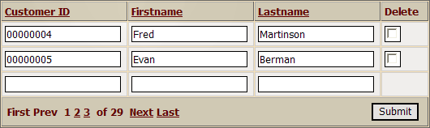
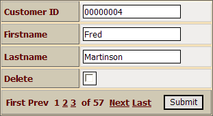
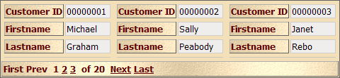
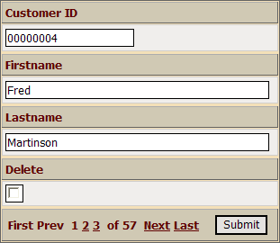
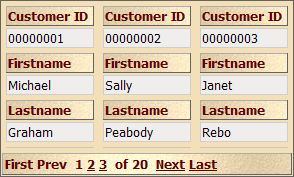
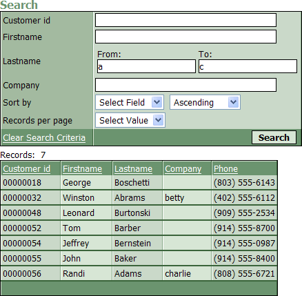

Grid Component Capabilities
A grid component displays reads from and writes to your database and displays the data in a web page. The Grid Builder is a genie that you use to create grid components.
The HTML Editor allows you to place grid components into A5W pages (an A5W page is a hybrid HTML/Xbasic page that is processed by the Application Server ).
Grids have many optional capabilities that you can enable or disable through menus. Many properties of a new grid component have default properties. If you wish, you can set different default property values.
Selecting the Grid Component Type
A grid component has many different optional display formats. You can change the display format of a grid component after it is created. The options are:
"Tabular" - a multi-record view similar to a conventional browse or query with field labels at the tops or bottoms of columns. The tabular style may have an optional detail component that displays the currently selected record. The following image shows an editable tabular grid. You may sort the contents of the grid by clicking on any column title.

"Columnar" - a single record view similar to a conventional form with field labels to the left of rows. The following image shows an editable columnar grid.

You can modify the columnar style to display multiple records.

"Stacked Columnar" - a single-record view that places the field labels above the fields. The following image shows an editable stacked columnar grid.

You can modify the stacked columnar style to show multiple records.

You can define whether a grid is editable or read-only. If a grid is editable, you can:
make any field in the grid read-only
optionally display a delete record button next to each record
specify the number of new record rows to appear
specify where new record rows will appear
specify the minimum access level required to edit, delete, or insert records
specify the minimum access level required to see any field from a record
specify the group that the user must belong to in order to edit, delete, or insert records
specify the group that the user must belong to in order to see any field from a record
specify whether user permissions will be set by granting access or denying access
If the grid is read-only:
the fields will appear in label controls. The widest field in any column sets the column width. Depending on the selection of records, the overall grid width will also vary.
you may optionally display a Detail View form when the user wants to add or edit a record. This form contains a customizable list of fields from the record that may be the same or different from the grid. The detail view can optionally allow the user to edit, delete, and insert records.
Each grid may have a Quick Search control. This feature is part of the grid component. The search argument may be specified with:
a conventional text search field
a predefined set of selections displayed as radio buttons, checkboxes, or drop down list box entries
Each grid component may have a separate search form. This form works in two modes:
with a control for each field that you wish to search. The selection of fields in the search form does not have to match the fields displayed on the grid.
with a single control that searches any sets of fields in the grid
You may optionally place additional controls on the search form that specify:
the field to use to sort the matching records
whether to sort matching records in ascending or descending order
the number of matching records to display in each grid page
The search form may be set to:
appear always
appear when a button is clicked
disappear when search results are found
Likewise, the grid may be hidden until a search finds records to display.
Searching for a Range of Values
To support searching by a range of values in any of the fields of a search form display the Search Properties page and select Search Options > Allow Query by Form Syntax. For example:
|
Objective |
Syntax |
|
Search a field for values between 1 and 6. |
1..6 |
|
Search a field for values less than "gold" |
..gold |
|
Search a field for values greater than "P00012" |
P00012.. |
|
Search a field for values equal to "MA" or "CA" |
MA,CA |
Another way to support searching by a range of values is to enable Display Settings > Range Search for a specific field on the search form. The following search form has range search enabled for the Lastname field.

If you build a grid component that uses .DBF files, and the grid has a Search part, then you can use the special phrases when searching for data:
"Is blank"
"Is NULL"
"Is empty"
"Is not blank"
"Is not NULL"
"Is not empty"
"Is NULL" is the same as "Is blank" or "Is empty" since .DBF files do not support Null values. This syntax can be used for character and date fields.
There are four search styles that you define for the search part. This style becomes the default style for each field in the search part.
1 = Exact match ignoring case and length
2 = Is contained in (the default selection)
3 = Starts with
4 = Wildcard, supports wildcard searches (using the * and ? characters)
 Note : "*"
matches multiple characters. "?" matches a single character.
Note : "*"
matches multiple characters. "?" matches a single character.
If the user enters a search value that does not contain any wildcard characters, then an exact match search is performed. Exact match searches can be very quick if the appropriate indexes exist. However, if the user does enter a search value that contains wildcard characters, then the appropriate search is performed.
For large tables, style 2 can be quite slow because it performs as a full table scan. Style 4 can be faster, but it requires users of your application to explicitly enter wildcard characters when entering the value to search for (whereas, for style 2, users do not have to enter wildcard characters).
Each field in a search part may have its own search style that overrides the default style of the search part. These are the same styles ((|#Search_Styles|defined above)).
A grid built with Alpha Five can display records selected:
from a single Alpha Five table or multiple tables joined in a view. You can add filtering and ordering expressions that select and sequence the records that you retrieve.
from a table, joined tables, or query in Microsoft Access. You can add filtering and ordering expressions that select and sequence the records that you retrieve.
by a SQL SELECT statement against an ADO or ODBC compatible database. This includes Microsoft Access, Microsoft SQL Server, MySQL, Oracle, and other databases.
You can add optional filtering and ordering expressions that select and sequence the records that you retrieve.
 Note : A grid can not
display OLE fields in Microsoft Access databases.
Note : A grid can not
display OLE fields in Microsoft Access databases.
Selecting the Fields to Display
After selecting a data source and the fields that are available, you can select all or a subset of these fields to place on the grid. You may sequence the fields in any order. There are many properties that you can set for each field,
If the grid is not editable, you will be able to customize the following properties for each field.
Display Settings - specify the types of controls to use and their display formats
Control Properties - specify field widths and other optional in-line styles
Column Properties - specify column headings and other attributes
Summary Values - specify optional summaries of column values
If the grid is editable, you will also be able to customize its Update Settings, which control the grid's insert, edit, and delete privileges.
Table fields may be displayed with a variety of control types. By default, all fields are displayed as labels if they are read only and as text boxes if they are updateable.
The following field types are also available:
Checkbox - allowing a selection from a list of values
DropDownBox - a list box that may appear as a list or combo box, and allowing a selection from a list of values, which is often retrieved from a table
Hidden - hides the control without hiding its column
Image - displaying either embedded or linked images
Link - a hyperlink, which may open another page or select a record to display
Radio button - allowing a selection from a list of values
Text area - similar to a text box, but with multiple lines
Pop-up calendar - a variation on a text box
Calendar - a monthly calendar
Custom - where you define the data to be displayed and its formatting using Xbasic and HTML
Tab - allowing grouping and selective display of sets of controls
Each field on a grid may have local (browser) data entry validation enabled. Properties that can be set for all fields include:
Require input
Compare the input to a predefined value or set of values
Comparison values may be retrieved from a table
Properties that can be set for character fields include:
Minimum and maximum lengths
Allow or disallow letter, digit, special, or white space characters
Format the input with a mask or a regular expression
Numeric fields have the follow optional validation properties:
Number format: integer, fixed decimal, variable decimal
Thousands separator
Decimal separator
Decimal places
You may define custom error messages for all types of errors.
All columnar grids and detail view forms may organize their fields into 2 or more tab panes within a tab control (V7). Each pane can hold an arbitrary number of fields. There are four styles of tab controls, some of which will hide inactive panes.
|
Style |
Description |
|
Tab |
Each pane has a button at the top or bottom of the control that displays the pane. When a pane becomes visible, all other panes are hidden. There is no sequence of access to the panes imposed on the user. |
|
Genie |
The panes, staring with the first pane, are displayed by clicking the Next or Previous buttons. Only one pane appears at a time. There is no random access to panes. |
|
Bands |
The panes are stacked vertically. Each pane may be collapsed so only its title appears. Any set of panes may be hidden or displayed at one time. There is no sequence of access to the panes imposed on the user. |
|
Single Band |
The panes are stacked vertically, but only one pane appears at a time. The other panes are represented by their titles. When a pane becomes visible, all other panes are hidden. There is no sequence of access to the panes imposed on the user. |
Each text field may have multiple types of summary calculations. The grid optionally displays these summaries after the last row of the grid or at the bottom of each page of the grid. Not all summaries are available for all data types. The options are:
Minimum
Maximum
First
Last
Total
Count
Average
Standard deviation
Variance
There are many optional properties for each grid. The default values for these properties produce a useable starting configuration. This means that you can largely ignore these optional properties when you are learning to build grids or you expect to gradually refine your design in later revisions.
Selecting Grid > Properties > Layout Options > Style name >
 > Select style displays the Select
style dialog box. You can preview and select the Cascading Style Sheet that you would like to apply to the grid.
> Select style displays the Select
style dialog box. You can preview and select the Cascading Style Sheet that you would like to apply to the grid.Selecting Grid > Properties > Layout Options > Style name >
> Edit Style displays the Webform
Style Builder. Here you can save a style with a new name, then
edit its characteristics to create a new style sheet that will appear
in the Select style dialog box.Most developers will want to modify the Rows of data that appear in the grid, particularly if the grid is being displayed with search or detail view forms inside an HTML page.
You may also want to experiment with the Record navigator position and <span class=Screen>Record Navigator Designer</span> to find the best style for your application.
The four free form edit regions allow you to place any HTML text above, below, to the left, and to the right of the grid. This provides a way to associate constant text and formatting with a grid that might be used in several different pages.
You can see the complete set of grid properties on the Xbasic tab of the Grid Builder.
Once you have specified the fields that will appear on the grid, search, and detail components, you may click Preview to see your work in the pane at the bottom of the screen. This view disables hyperlinks. If you want to run the grid and interact with the database, display the Live Preview tab. To run the grid in your web browser, click Browser.
The HTML tab of the Web Component Builder displays the HTML that you are generating in the background. The Xbasic tab of the Web Component Builder displays the Xbasic data structures that you are generating in the background. You cannot directly edit the HTML or Xbasic code, although you can copy it to use in other places.
If you open a A5W page in the HTML Editor, you may now insert this grid component into the page and preview it in your web browser.
See Also
|
Creating the Grid |
Description |
|
Describes the beginning steps when creating a grid component. | |
|
Describes the different grid styles, so you can selecting the right format for your component. |
|
Getting the Data |
Description |
|
Provides an overview of the different possible data sources. | |
|
Describes how to retrieve data from an Alpha Five table. | |
|
Describes how to retrieve data from multiple Alpha Five tables using a "view". | |
|
Describes how to retrieve data from Microsoft Access database. | |
|
Describes how to retrieve data from an ADO compatible database. | |
|
Describes how an Alpha Five user retrieves data from an ODBC compatible database. | |
|
Describes how to construct SQL SELECT statements to retrieve data from ADO/ODBC compatible databases. | |
|
Grid Linkers merge multiple grids to show parent-child relationships (Alpha Five sets) between tables. | |
|
Grid Linkers merge multiple grids to show parent-child relationships (Alpha Five sets) between tables. | |
|
Navigation components link multiple pages (and their grids) with horizontal or vertical menus. |
|
Placing Fields on the Grid |
Description |
|
Describes how to place fields into a grid. | |
|
Describes the many properties that can be set for any field. | |
|
Defining Choices for Check Boxes, Radio Buttons, and Drop Down Lists |
Shows how to define static and dynamic sets of choices for various types of list controls. |
|
Describes additional properties that may assigned to field summaries. | |
|
Shows how to combine fields and custom HTML coding. | |
|
How to retrieve one or more field values to place into controls on your grid. | |
|
Shows you how to create a custom grid control. |
|
Formatting the Grid |
Description |
|
Describes the many properties that can be used to format the grids. | |
|
Show how to customize the record navigator. | |
|
Describes how to customize the buttons used in style sheets. | |
|
Shows how to apply custom HTML coding to grid elements. | |
|
Describes how to create and format multi-pane tab displays. | |
|
Describes several techniques for positioning controls on a columnar grid. | |
|
Describes how to customize and create Cascading Style Sheets. |
Limitations Web publishing applications only. |